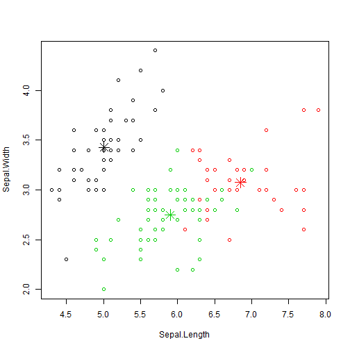

Let me introduce myself. My name is Iris Setosa.
rona38
Lifelong learning university
Let me introduce myself. My name is Iris Setosa.
summary(iris)
## Sepal.Length Sepal.Width Petal.Length Petal.Width
## Min. :4.30 Min. :2.00 Min. :1.00 Min. :0.1
## 1st Qu.:5.10 1st Qu.:2.80 1st Qu.:1.60 1st Qu.:0.3
## Median :5.80 Median :3.00 Median :4.35 Median :1.3
## Mean :5.84 Mean :3.06 Mean :3.76 Mean :1.2
## 3rd Qu.:6.40 3rd Qu.:3.30 3rd Qu.:5.10 3rd Qu.:1.8
## Max. :7.90 Max. :4.40 Max. :6.90 Max. :2.5
## Species
## setosa :50
## versicolor:50
## virginica :50
##
##
##
result=kmeans(iris[,-5],3)
table( iris$Species, result$cluster)
##
## 1 2 3
## setosa 50 0 0
## versicolor 0 2 48
## virginica 0 36 14
plot(iris[c("Sepal.Length", "Sepal.Width")], col = result$cluster)
points(result$centers[,c("Sepal.Length", "Sepal.Width")], col = 1:3, pch = 8, cex=2)
